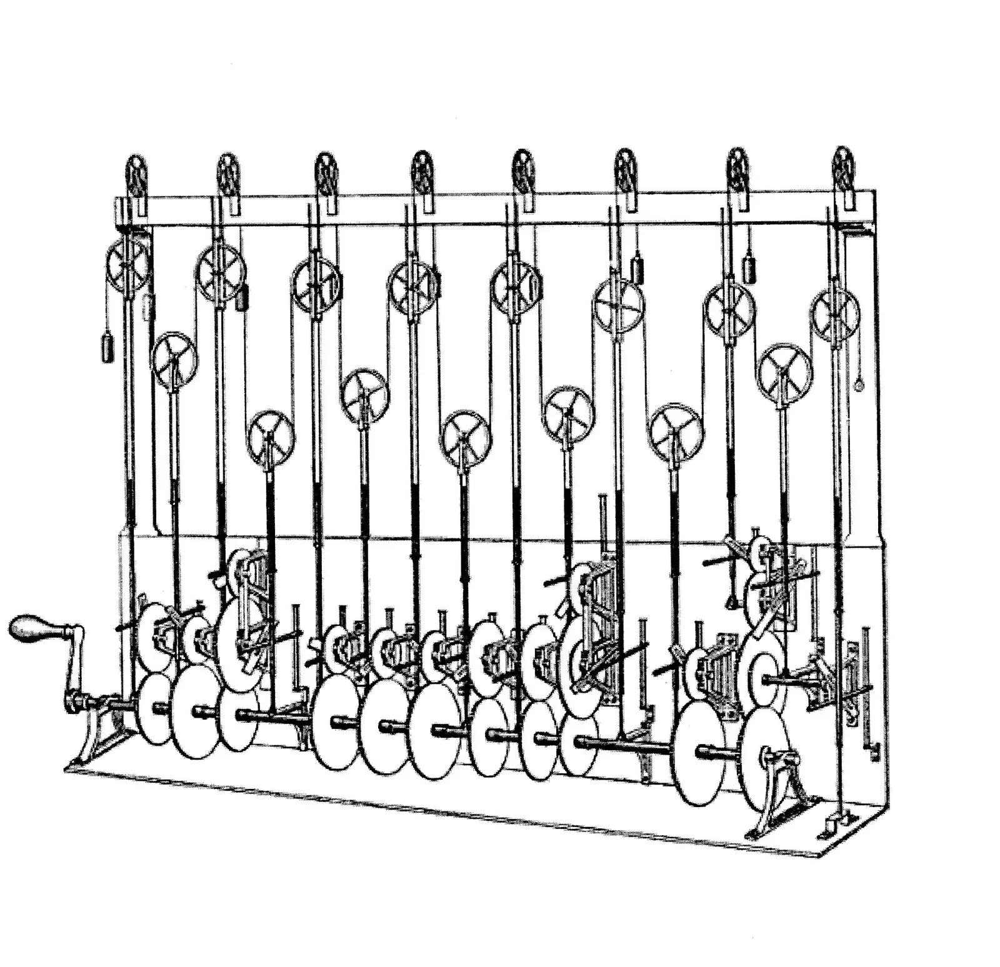

Definition
Buyers compare ranges. The sentence that states a range has to include the unit in the same breath as the number. If you offer both a metric and a US customary figure, label each and say which one the drawing uses. Rounding has to be visible. Translation is not a license to drop the unit because the other language “will understand.”
Short answer
Unit localization on a specification page may display a converted value, but it must name the unit and keep a single underlying measure. A bare number that changes between languages is a different specification.

Fields that must say the same thing
Align the product name and the range before you align adjectives. Company, product, specification, application, and the condition of the claim still have to match. A market page can explain a local labeling habit. It cannot silently replace the measure.
The issue on the page
Put the unit in HTML. A diagram may illustrate the setup, and the caption should point back at the source page, but the diagram is not the only place the number exists. Link the datasheet in the same language.
Signals that travel with the page
Hreflang will not reconcile units. If the pages disagree, fix the text and re-audit. SEO Health may still pass a page that is simply wrong in a fluent way. GEO Health is where that disagreement belongs.
The unit is part of the specification, not a formatting preference. Mika Visibility keeps one set of company, product, specification, and application facts in every language you publish, while the market’s own questions need real depth. English stays at the root. Chinese stays under /zh/. Do not add an /en/ prefix. Hreflang uses en, zh-Hans, and x-default pointing at the English URL. A health finding never becomes a growth score.
What to check
- Read the number and the unit together in both languages.
- Label any converted value and name the unit the drawing uses.
- Keep the measure in HTML text.
- Re-audit after a translation pass that touches numbers.
What this does not claim
Honest units do not guarantee search rankings or AI citations. Mika does not certify conversions or promise answer-product placement.
A practical example
Teaching example, not a lab report. English states a hose length of 2 m. The other language states 2 ft because a converter ran once and nobody checked. The repair restores 2 m, and if a second unit is useful it adds the labeled conversion beside it. No test score is claimed.
FAQ
What may unit localization change on a specification?
Unit localization on a specification page may display a converted value, but it must name the unit and keep a single underlying measure. A bare number that changes between languages is a different specification.
How should two unit systems appear on one page?
Buyers compare ranges. The sentence that states a range has to include the unit in the same breath as the number. If you offer both a metric and a US customary figure, label each and say which one the drawing uses. Rounding has to be visible. Translation is not a license to drop the unit because the other language “will understand.”
Do correct units guarantee citations?
Honest units do not guarantee search rankings or AI citations. Mika does not certify conversions or promise answer-product placement.
Next step
Run a structured SEO + GEO audit to see health findings, growth gaps, and a blueprint you can act on.
Clearer entities, answers, evidence, and context make pages easier to understand and reference. Results in any answer product are not guaranteed.